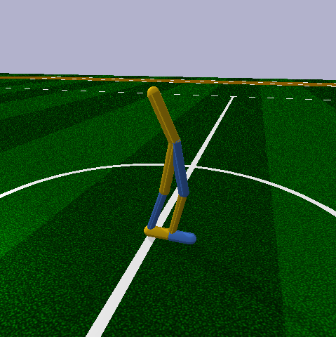
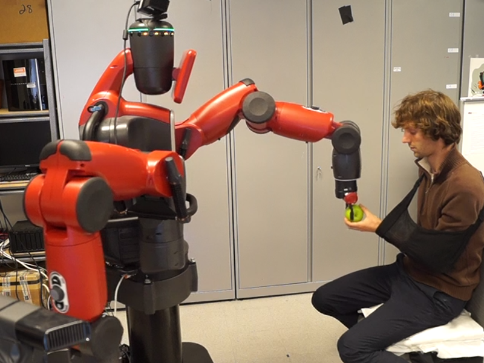
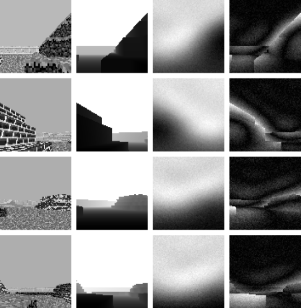
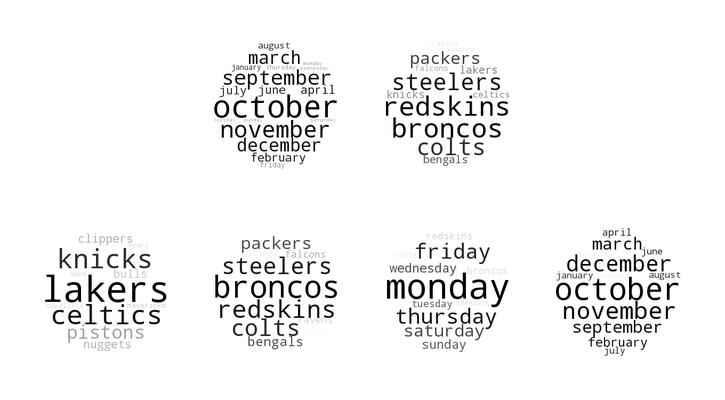

Information Maximizing Exploration with a Latent Dynamics Model
This work extended a previous exploration method, Variational Information Maximizing Exploration, that is based on the idea of optimism in the face of uncertainty. Essentially, we incentivize exploring parts of the environment about which little is known.
In VIME, a separate Bayesian dynamics model is learned and intrinsic reward bonuses are derived from the amount of information gained by visiting a state. Our key observation is based on a relationship between linear one-step forward models and linear value estimates. We propose fitting the dynamics model in the features found by the final hidden layer of the neural network value estimator. This has two significant advantages: (1) the dimensionality of the inputs are untied from the dimensionality of the Bayesian model and (2) the theory suggests that since the value estimate is linear in these features, the model can be as well. This simplifies the Bayesian modeling. We find this to be the case and observe that information maximizing exploration in the latent space performs comparable or better than VIME.

Mutual Learning and Adaptation for Robot to Human Handover Tasks
We focus on sample-efficient reinforcement learning in the context of a human with a disability. An initial policy is defined by imitation, which is then adapted to someone which a particular impairment according to some objective (distance to the human's hand, for example). We are able to learn efficient trajectories for object handovers from robot to human in as few as 50 trials.
This work was presented at the 2017 Interdisciplinary Conference on Reinforcement Learning and Decision Making.

Reinforcement learning for tasks in a 3D environment using only visual input
Deep reinforcement learning is an effective method for training autonomous agents to a high level of performance on visual tasks. This work explores how reinforcement learning agents using
deep Q-networks perform when visually processing
3-D virtual environments and how deeper network
architectures can improve performance given the
added difficulties of more complex environments.
We explored ways to handle 3D environments such as providing a point-cloud representation of the agent's environment or a depth map as input to the network. We found, however, that depth can accurately be inferred from 2D inputs in structured environments.
We provide results for tests on a variety of tasks in
a virtual 3-D world and show that deeper convolutional neural networks lead to increased performnce.

Visualizing Natural Language Features in Stacked Autoencoders
Visualizing the features of unsupervised deep networks is an important part of understanding what a network has learned. In this paper, we present a method for visualizing a deep autoencoder's hidden layers when trained on natural language data with t-SNE plots and wordclouds. Our method is complementary to training error analysis and it can help determine an appropriate stopping point in the training process. It can also provide researchers insight into the semantic language features the network has extracted from the dataset. Finally, it can show a big picture view of what a network has learned and how the various features the network has extracted relate to one another in semantic hierarchies. We hope that these benefits will aid human understanding of deep networks and can help guide future experiments.